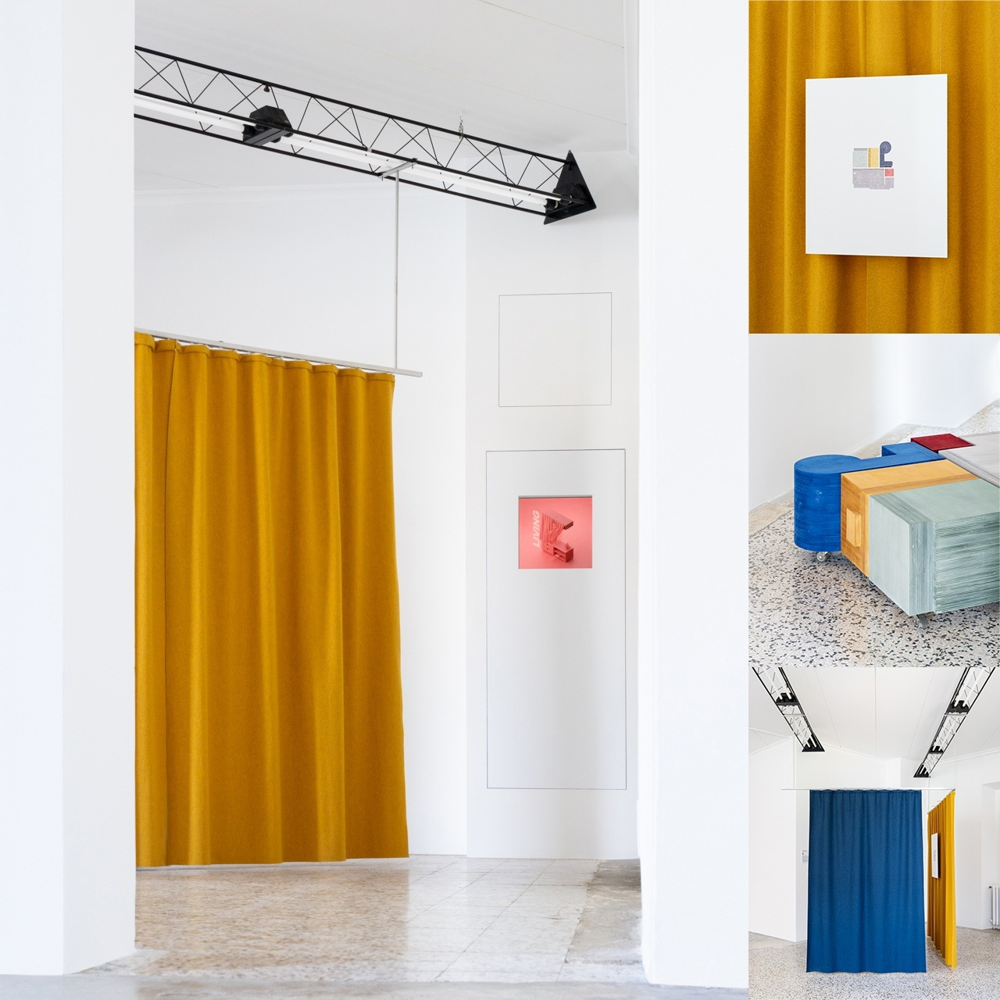
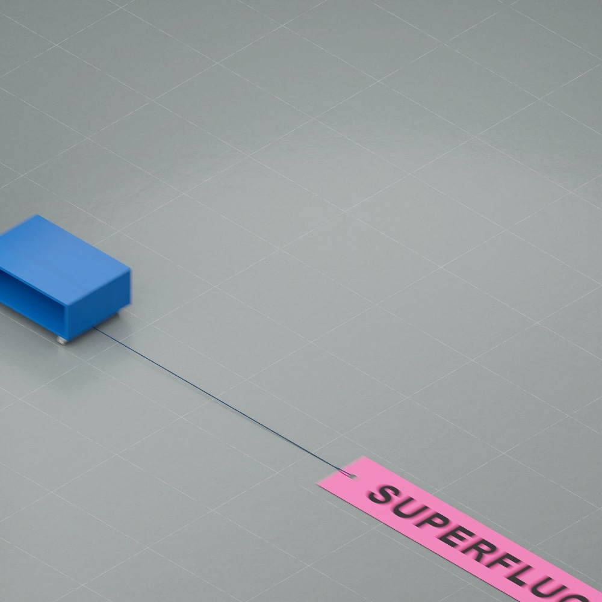
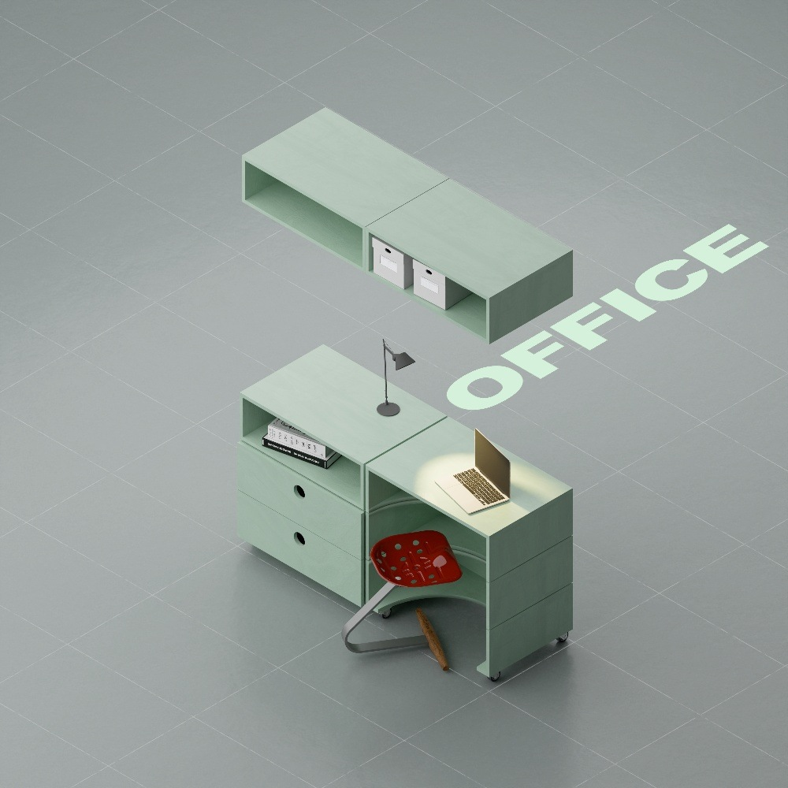
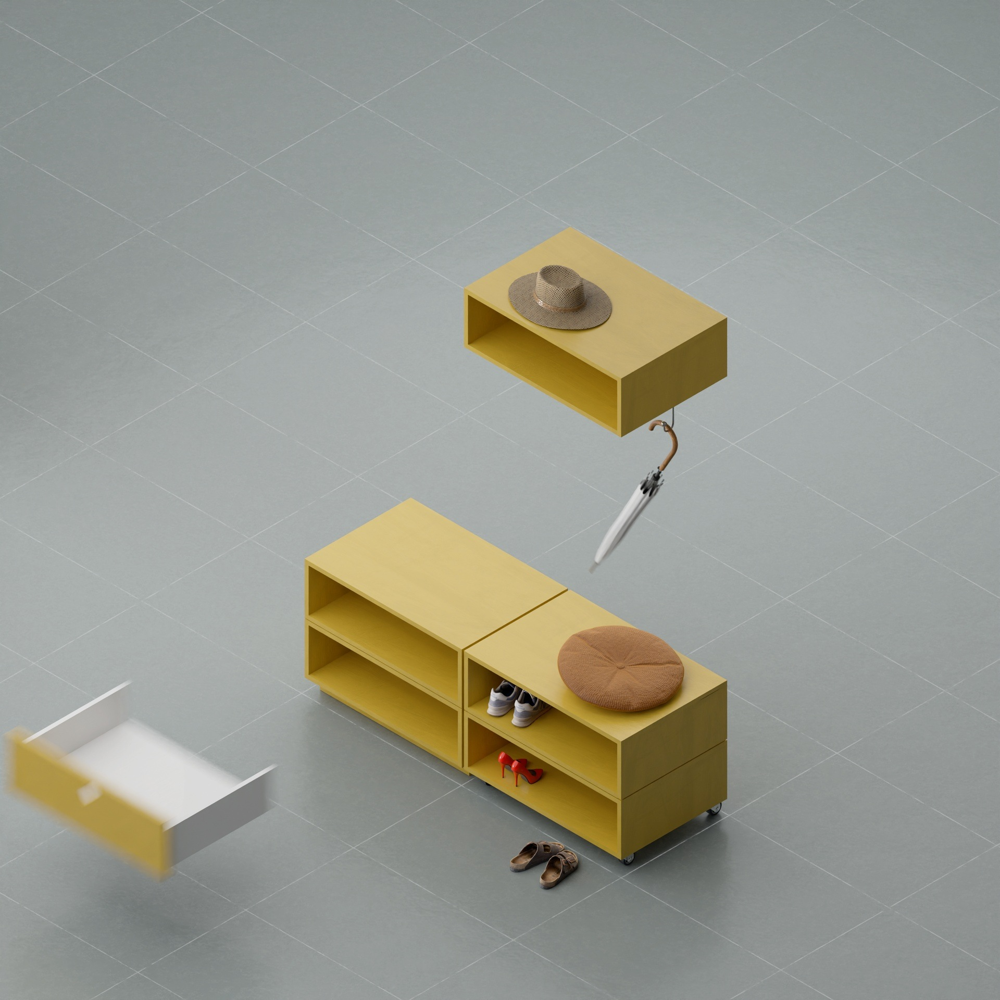
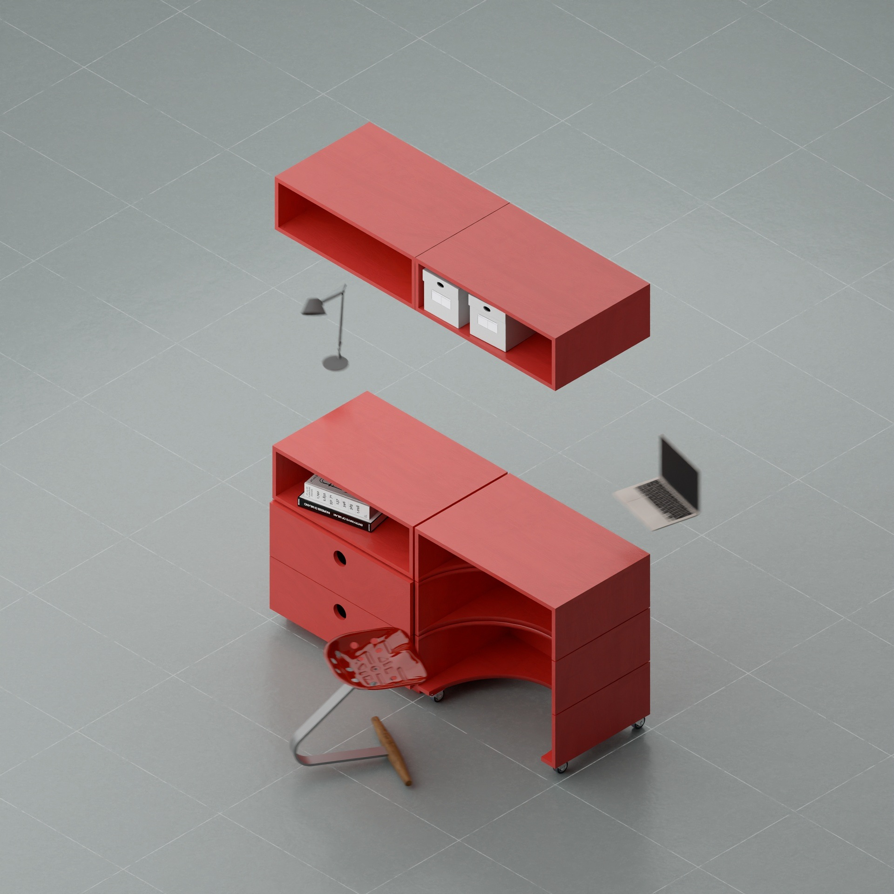
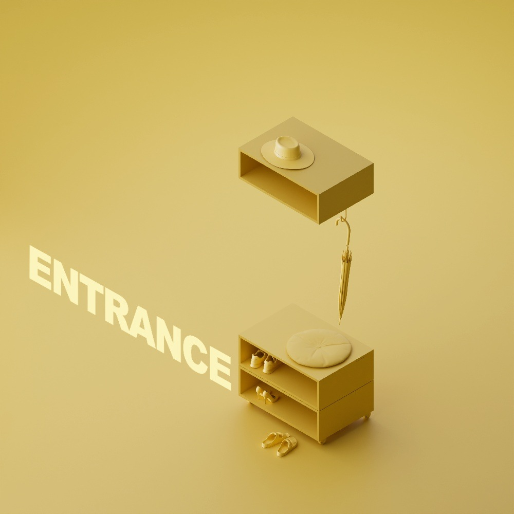

fragments
an animated exploration of modular furniture and spatial flexibility
conceived as part of
da elemento a spazio by
stefano larotonda
lake como design festival, villa sucota, como
14.09.25 – 21.09.25

Orbiting the furniture constellations of the SSML Apartment in Lugano, fragments is a first experimental animation study.

Stefano’s furniture concept addresses the questions of contemporary living by juxtaposing modular pieces with complementary accessories.

The medium of the video animation is chosen for the versatility and power in displaying transformations and their potential interactions.

Unlike still frames, where the viewer must fill in the gaps between defined compositions, the animation focuses on the movement in a fragmented, frenetic, and looping sequence.

Each room’s defining constellation is crystallized through bright posterlike frames, which mirror the vibrant plywood elements crafted by Falegnameria Giussani.

View the looping animation below.
Credits
This project includes third-party 3D assets under CC-BY and standard platform licenses.
fragments_asset_credits.pdf ⏎